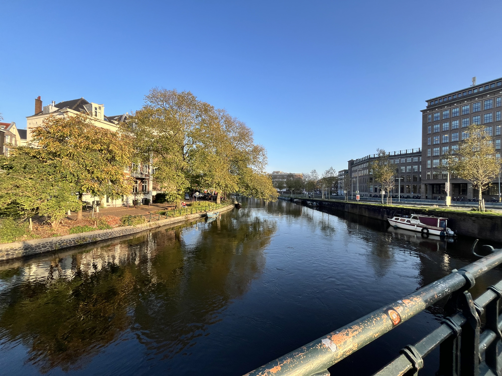

De Gouden Grachten Van Amsterdam
De Amsterdamse grachten zijn onmisbaar voor onze hoofdstad, ze zijn al eeuwenlang belangrijk voor vervoer, economie en maken de stad uniek. Ondanks het feit dat ze prachtig zijn worden ze net als alle andere wateren extreem vervuild met oude fietsonderdelen, plastic flessen en ander vuil.
Gelukkig houden Amsterdammers van problemen oplossen en zijn er dus een paar lokale initiatieven in Amsterdam die vrijwillig de grachten opgaan om ze schoon te maken.
KLIK HIER VOOR HET INITIATIEF
Fotoalbum
